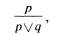
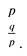
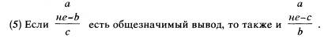
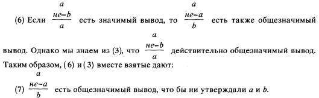

Карл Р. Поппер
Спор о диалектике
What is Dialectic?-Доклад, прочитанный на философском семинаре Кентерберийского университетского колледжа в Крайстчерче (Новая Зеландия) в 1937 г. Впервые опубл. в журн. "Mind", N.S -N 49. Перевод выполнен по изд.: Popper К. R. Conjectures and Refutations. L., 1976. Pp. 31-2- 335.
От редакции. 19 сентября 1994 г. скончался сэр Карл Р. Поппер.
Публикуя в данном номере классическую статью К. Поппера, редакция намеревалась не просто ознакомить читателя с наследием одного из крупнейших философов нашего столетия, но прежде всего привлечь внимание к самой обсуждаемой им проблеме. Известно, что диалектика была канонизирована в качестве неотъемлемой черты официальной идеологии марксизма-ленинизма, господствовавшей в течение многих десятилетий в нашей стране не и, могла не испытать идеологических деформаций. С другой стороны, в ходе развернувшейся на страницах печати критики нашего недавнего прошлого, диалектика во всех ее вариантах нередко с порога отвергается в качестве «идеологического обеспечения тоталитаризма, а диалектическая логика объявляется нонсенсом, невозможным словосочетанием.
Вместе с тем в современной западной философии наблюдается новый интерес к диалектике, а известные специалисты по символической логике обсуждают возможности создания систем диалектической логики.
В этой связи мы считаем назревшим серьезный разговор о судьбах и перспективах диалектики как философской концепции. Поэтому, наряду с текстом К. Поппера, мы опубликуем статьи В. Н. Садовского, В. А. Смирнова и В. С. Швырева, в которых излагаются различные точки зрения по обсуждаемой проблеме. В этом же номере мы публикуем статью В. С. Библера, значительная часть которой посвящена анализу взглядов К. Поппера на диалектику.
Редакция журнала «Вопросы философии», Московский философский фонд и посольство Австрии планируют провести в феврале этого года конференцию, посвященную творчеству К. Поппера.
Вопросы философии.— 1995.— №1.— С. 118—138.
Нельзя представить себе ничего настолько абсурдного или неправдоподобного, Декарт |
1. Диалектика, если ее разъяснить
Приведенный нами эпиграф можно обобщить. Он относится не только к философам и философии, но и вообще ко всей области человеческого мышления и деятельности, к науке, технологии, инженерному делу и политике. В самом деле, общая тенденция к испытанию, подразумеваемая в нашем эпиграфе, просматривается и в более широкой области — в огромном разнообразии форм и явлений, созданных жизнью на нашей планете.
Поэтому если мы хотим разъяснить, почему человеческое мышление стремится испробовать все мыслимые решения всех проблем, с какими бы оно ни сталкивалось, то можем сослаться на одну в высшей степени общую закономерность. Метод, с помощью которого пытаются решить все проблемы, обычно один и тот же,— это метод проб и ошибок. Этот же метод, по сути дела, используется и организмами в процессе адаптации. Ясно, что его успешность в огромной степени зависит от количества и разнообразия проб: чем больше мы делаем попыток, тем более вероятно, что одна из них окажется удачной.
Метод, способствующий развитию человеческого мышления — и особенно философии, мы можем охарактеризовать как частный случай метода проб и ошибок. Видимо, люди чаще всего реагируют на проблему двояко: они либо выдвигают теорию и хранят верность ей как можно дольше (в случае ошибочности теории они порой даже предпочитают отречению смерть 1), либо борются против такой теории, если поняли ее слабость. Эта борьба идеологических установок — которая, несомненно, может быть разъяснена в терминах метода проб и ошибок — характерна для всего, что можно назвать развитием человеческого мышления. Такая борьба отсутствует, как правило, в тех случаях, когда некоторую теорию или систему, несмотря ни на что, догматически отстаивают в течение долгого времени. Однако найдется очень немного примеров (если они вообще существуют) развития мышления, которое было бы медленным, неуклонным, непрерывным и шло бы путем постепенного улучшения, а не путем проб, ошибок и борьбы идеологических установок.
Если метод проб и ошибок развивается все более и более сознательно, то он начинает приобретать характерные черты «научного метода». Этот «метод» 2 вкратце можно описать следующим образом. Столкнувшись с определенной проблемой, ученый предлагает, в порядке гипотезы, некоторое решение — теорию. Если эта теория и признается наукой, то лишь условно; и самая характерная черта научного метода состоит как раз в том, что ученые не пожалеют сил для критики и проверки обсуждаемой теории. Критика и проверка идут рука об руку: теория подвергается критике с самых разных сторон, и критика позволяет выявить те моменты теории, которые могут оказаться уязвимыми. Проверка же теории достигается посредством как можно более строгого испытания этих уязвимых мест. Конечно, это опять-таки вариант метода проб и ошибок. Теории выдвигаются в качестве гипотез и тщательно проверяются. Если результат проверки свидетельствует об ошибочности теории, то теория элиминируется; метод проб и ошибок есть, в сущности, метод элиминации. Его успех зависит главным образом от выполнения трех условий, а именно: предлагаемые теории должны быть достаточно многочисленны (и оригинальны); они должны быть достаточно разнообразны; осуществляемые проверки должны быть достаточно строги. Таким образом мы сможем, если нам повезет, гарантировать выживание самой подходящей теории посредством элиминации менее подходящих.
Если это описание 3 развития человеческого мышления вообще и научного мышления в частности признать более или менее корректным, то оно поможет нам понять, что имеется в виду, когда говорят, что развитие мышления происходит «диалектически».
Диалектика (в современном 4, то есть главным образом гегелевском, смысле термина) — это теория, согласно которой нечто — в частности, человеческое мышление,— в своем развитии проходит так называемую диалектическую триаду: тезис, антитезис и синтез. Сначала — некая идея, теория или движение,— «тезис». Тезис, скорее всего, вызовет противоположение, оппозицию, поскольку, как и большинство вещей в этом мире, он, вероятно, будет небесспорен, то есть не лишен слабых мест. Противоположная ему идея (или движение) называется «антитезисом», так как она направлена против первого — тезиса. Борьба между тезисом и антитезисом продолжается до тех пор, пока не находится такое решение, которое в каких-то отношениях выходит за рамки и тезиса, и антитезиса, признавая, однако, их относительную ценность и пытаясь сохранить их достоинства и избежать недостатков. Это решение, которое является третьим диалектическим шагом, называется синтезом. Однажды достигнутый, синтез, в свою очередь, может стать первой ступенью новой диалектической триады и действительно становится ею, если оказывается односторонним или неудовлетворительным по какой-то другой причине. Ведь в последнем случае снова возникнет оппозиция, а значит, синтез можно будет рассматривать как новый тезис, который породил новый антитезис. Таким образом, диалектическая триада возобновится на более высоком уровне; она может подняться и на третий уровень, когда достигнут второй синтез 5.
То, что называют диалектической триадой, мы разъяснили достаточно полно. Едва ли можно сомневаться в том, что диалектическая триада хорошо описывает определенные ступени в истории мышления, особенно в развитии идей, теорий и социальных движений, опирающихся на идеи или теории. Такое диалектическое развитие можно «разъяснить», если показать, что оно происходит в соответствии с методом проб и ошибок, который мы обсуждали ранее. Однако следует отметить, что диалектическое развитие не является полным эквивалентом описанного нами развития теории посредством проб и ошибок. Рассматривая метод проб и ошибок, мы имели в виду только идею и критику в ее адрес, или, используя терминологию диалектиков, борьбу между тезисом и антитезисом; мы не принимали во внимание дальнейшее развитие, не предполагали, что борьба между тезисом и антитезисом должна закончиться неким синтезом. Мы имели в виду, скорее, что борьба между идеей и ее опровержением, или между тезисом и антитезисом, приведет к элиминации тезиса (или, возможно, антитезиса), если он окажется неудовлетворительным, и что соревнование теорий должно завершиться принятием новых теорий, если, конечно, для испытания предлагается достаточно большое их число.
Таким образом, можно сказать, что интерпретация в терминах метода проб и ошибок является несколько более гибкой, чем интерпретация в терминах диалектики. Она не ограничивается ситуацией, где предлагается начинать с одного-единственного тезиса, и потому с легкостью находит применение там, где с самого начала выдвигается несколько тезисов, независимых друг от друга и не обязательно противоположных. Однако надо признать, что очень часто — пожалуй, даже обычно — развитие определенной области человеческого мышления начинается с какой-то одной идеи. Если так, то диалектическая схема часто оказывается уместной, поскольку этот тезис будет открыт для критики и, таким образом, «создаст», как обычно выражаются диалектики, свой антитезис.
Диалектики настаивают еще на одном моменте, в котором диалектика несколько отличается от общей теории проб и ошибок. Действительно, в рамках теории проб и ошибок, как уже говорилось, достаточно сказать, что неудовлетворительная точка зрения будет опровергнута или элиминирована. Диалектик же настаивает, что этого недостаточно. Он подчеркивает, что, хотя обсуждаемая точка зрения (или теория) может быть опровергнута, в ней имеется, по всей вероятности, нечто достойное сохранения,— иначе она вряд ли была бы вообще выдвинута и воспринята всерьез. Это рациональное зерно тезиса, вероятно, наиболее отчетливо осознается теми, кто защищает тезис от нападок оппонентов, сторонников антитезиса. Следовательно, единственно приемлемым исходом борьбы будет синтез, то есть теория, в которой сохранены наиболее ценные элементы и тезиса, и антитезиса.
Необходимо признать, что подобная диалектическая интерпретация истории мышления может быть вполне удовлетворительной и добавляет некоторые ценные моменты к интерпретации мышления в терминах проб и ошибок.
Обратимся, скажем, к развитию физики. Здесь мы можем найти очень много примеров, которые вписываются в диалектическую схему. Так, корпускулярная теория света, будучи сначала заменена волновой теорией, была «сохранена» в новой теории, которая заменила и ту, и другую. Если говорить точнее, формулы старой теории обычно могут быть описаны — с точки зрения новой теории — как приближения, то есть они оказываются почти корректными, настолько, что их можно применять либо если мы не нуждаемся в очень высокой степени точности, либо даже — в некоторых ограниченных областях — как совершенно точные формулы.
Все это говорит в пользу диалектической точки зрения. Вместе с тем мы должны внимательно следить за тем, чтобы не приписать ей лишних достоинств.
Мы должны быть осторожны, например, по отношению к ряду метафор, используемых диалектиками и, к сожалению, часто воспринимаемых слишком буквально. Например, диалектики говорят, что тезис «создает» свой антитезис. В действительности же только наша критическая установка создает антитезис, и там, где она отсутствует, никакой антитезис создан не будет. Далее, не следует думать также, что именно «борьба» между тезисом и антитезисом «создает» синтез. На самом деле происходит битва умов, и именно умы должны быть продуктивны и создавать новые идеи; история человеческого мышления насчитывает много бесплодных битв, битв, закончившихся ничем. И даже если синтез достигнут, его характеристика как «сохраняющего» лучшие элементы тезиса и антитезиса, как правило, является весьма несовершенной. Эта характеристика вводит в заблуждение, даже если она верна, поскольку помимо старых идей, которые синтез «сохраняет», он всегда воплощает и новую идею, которую нельзя редуцировать к более ранним стадиям диалектического развития. Другими словами, синтез обычно представляет собой нечто гораздо большее, нежели конструкцию из материала, доставляемого тезисом и антитезисом. Принимая во внимание все сказанное, можно заключить, что диалектическая интерпретация — прежде всего то ее положение, что синтез строится из идей, содержащихся в тезисе и антитезисе,— если и находит применение, все же вряд ли может способствовать развитию мышления. Этот момент подчеркивали подчас и сами диалектики; и тем не менее они почти всегда думают, что диалектика может быть использована как метод, который поможет им подтолкнуть или, по крайней мере, предсказать будущее развитие мышления.
Однако самые серьезные недоразумения и невнятица возникают из-за расплывчатости, характерной для рассуждений диалектиков о противоречиях.
Они верно указывают, что противоречия имеют огромное значение в истории мышления,— столь же важное, сколь и критика. Ведь критика, в сущности, сводится к выявлению противоречия. Это может быть противоречие либо в рамках критикуемой теории, либо между этой теорией и другой теорией, которую у нас есть основания принять, либо между теорией и определенными фактами — точнее, между теорией и определенными утверждениями о фактах. Критика всегда лишь указывает на противоречие или же, можно сказать, просто противоречит теории (то есть служит утверждению антитезиса). Однако критика является — в очень важном смысле — главной движущей силой любого интеллектуального развития. Без противоречий, без критики не было бы рационального основания изменять теории,— не было бы интеллектуального прогресса.
Верно заметив, таким образом, что противоречия — особенно, конечно, противоречия между тезисом и антитезисом, которые «создают» прогресс в форме синтеза,— чрезвычайно плодотворны и действительно являются движущей силой любого прогресса в мышлении, диалектики делают вывод — как мы увидим, неверный,— что нет нужды избегать столь плодотворных противоречий. Они даже утверждают, что противоречий вообще нельзя избежать, поскольку они встречаются в мире всегда и повсюду.
Данное утверждение равносильно покушению на так называемый закон противоречия (или, более полно, закон исключения противоречий) традиционной логики, который гласит, что два противоречащих друг другу утверждения не могут быть истинными одновременно или что утверждение, представляющее собой конъюнкцию двух противоречащих утверждений, всегда должно отвергаться как ложное исходя из чисто логических оснований. Ссылаясь на плодотворность противоречий, диалектики заявляют, что от этого закона традиционной логики следует отказаться. Они заявляют, что диалектика приводит тем самым к новой логике — диалектической логике. Диалектика, которую я до сих пор характеризовал как принадлежащую исключительно к области истории (as a merely historical doctrine) — как теорию исторического развития мышления,— оказывается в результате совсем другим учением: она оказывается одновременно и логической теорией, и — как мы скоро увидим — общей теорией мира.
Эти огромные претензии, однако, не имеют под собой ни малейшего основания. Действительно, они опираются лишь на неопределенную и туманную манеру речи, характерную для диалектиков.
Диалектики говорят, что противоречия плодотворны и способствуют прогрессу, и мы согласились, что в каком-то смысле это верно. Верно, однако, только до тех пор, пока мы полны решимости не терпеть противоречий и изменять любую теорию, которая их содержит,— другими словами — никогда не мириться с противоречиями. Только благодаря этой нашей решимости критика, то есть выявление противоречий, побуждает нас к изменению теорий и тем самым — к прогрессу.
Нельзя не подчеркнуть со всей серьезностью, что стоит нам только изменить эту установку и примириться с противоречиями, как они утратят всякую плодотворность. Они больше не будут способствовать интеллектуальному прогрессу. Действительно, если мы готовы мириться с противоречиями, то никакие противоречия, выявляемые в наших теориях, уже не заставят нас изменить последние. Другими словами, в этом случае всякая критика (то есть выявление противоречий) утратит силу. Критику будут встречать словами: «А почему бы и нет?», а то и восторженным «Вот они!», то есть все сведется к приветствованию замеченных противоречий.
Это значит, что если мы готовы примириться с противоречиями, то критика, а вместе с нею и всякий интеллектуальный прогресс, должна прийти к концу.
Поэтому мы должны сказать диалектику, что нельзя сидеть сразу на двух стульях: либо он ценит противоречия за их плодотворность — и тогда не должен принимать их как должное; либо же он готов примириться с противоречиями — и тогда они станут бесплодными, а рациональная критика, дискуссия и интеллектуальный прогресс окажутся невозможными.
Единственной «силой», движущей диалектическое развитие, является, таким образом, наша решимость не мириться с противоречиями между тезисом и антитезисом. Вовсе не таинственная сила, заключенная в этих двух идеях, не загадочное напряжение, якобы существующее между ними, способствуют развитию, а исключительно наша решимость не признавать противоречий заставляет нас искать какую-то новую точку зрения, позволяющую избежать противоречий. И это совершенно оправданная решимость. Ибо легко показать, что если бы человек примирился с противоречием, то ему пришлось бы отказаться от всякой научной активности, что означало бы полный крах науки. Это можно сделать, доказав, что в случае признания двух противоречащих друг другу высказываний придется признать какое угодно высказывание: ведь из пары противоречащих высказываний можно с полным правом вывести все что угодно.
Поскольку это не всегда понимают 6, здесь будет дано исчерпывающее разъяснение. Речь идет об одном из немногих не вполне тривиальных фактов элементарной логики; он заслуживает того, чтобы его знал и понимал каждый мыслящий человек. Его можно легко объяснить тем читателям, которые не испытывают неприязни к символам, похожим на математические; однако и те, кому такие символы не нравятся, без труда во всем разберутся, если только им достанет терпения посвятить этому предмету несколько минут.
Логический вывод осуществляется в соответствии с определенными правилами вывода. Вывод общезначим, если общезначимо правило вывода, на которое он опирается; а правило вывода общезначимо, если и только если оно никогда не приводит от истинных посылок к ложному заключению; или, другими словами, если оно безошибочно переносит истинность посылок (при условии, что они истинны) на заключение.
Нам понадобятся два таких правила вывода. Чтобы разъяснить первое и наиболее трудное, введем понятие составного высказывания [compound statement). Таковы, например, следующие высказывания: «Сократ мудр и Петр — царь», или «Либо Сократ мудр, либо Петр — царь (но не то и другое вместе)», или еще: «Сократ мудр и/или Петр — царь». Два высказывания («Сократ мудр» и «Петр — царь»), из которых состоит составное высказывание, называются составляющими высказываниями.
Нас интересует здесь одно составное высказывание, а именно — построенное таким образом, что оно истинно, если и только если истинно по крайней мере одно из двух его составляющих. Неуклюжее выражение «.и/или» создает как раз такое составное высказывание: «Сократ мудр и/или Петр — царь» будет истинным, только если одно или оба составляющие его высказывания истинны; и оно будет ложным, если и только если оба его составляющие ложны.
В логике принято заменять выражение и/или символом «v» и использовать для обозначения любого выражения буквы р и q. Мы можем сказать, что высказывание формы «р v q» истинно, если истинно, по крайней мере, одно из двух составляющих р и q.
Теперь мы можем сформулировать первое правило вывода. Выразим его так:
(1) Из посылки р (например, «Сократ мудр») с полным правом можно вывести любое заключение формы «р v q» (например: «Сократ мудр v Петр — царь»).
Мы сразу же поймем необходимую общезначимость этого правила, если вспомним о значении «v». Этот символ создает составное высказывание, которое истинно всегда, когда истинно, по крайней мере, одно из его составляющих. Соответственно, если р истинно, то р v q тоже обязательно истинно. Таким образом, наше правило никогда не может приводить от истинной посылки к ложному заключению, а это и означает, что оно общезначимо.
При всей своей общезначимости первое правило вывода часто поражает непривычных к таким вещам людей — оно кажется им странным. И действительно, это правило редко применяется в повседневной жизни, поскольку его вывод содержит гораздо более скудную информацию, чем посылка. Однако иногда оно все же применяется, например при заключении пари. Скажем, я могу дважды подбросить монету, побившись об заклад, что орел выпадет по крайней мере один раз. Это очевидным образом равносильно поручительству за истинность составного высказывания «орел выпадет при первом подбрасывании монеты v, орел выпадет при второй попытке». Вероятность (в обычном смысле слова) такого высказывания равна 3/4; таким образом, оно отлично от высказывания «орел выпадет при первой попытке или орел выпадет при второй попытке (но не дважды)», вероятность которого равна 1/2 Всякий признает, что я выиграл пари, если орел выпал при первом подбрасывании монеты,— иными словами, что составное высказывание, за истинность которого я поручился, должно быть истинно, если истинно первое его составляющее; это показывает, что мы рассуждали в соответствии с первым правилом вывода.
Мы можем также записать первое правило следующим образом:
 что читается так: «из посылки р получаем следствие р v q». Второе правило вывода, которым я собираюсь воспользоваться, более привычно. Если отрицание р мы обозначим как «не-р», то правило можно сформулировать следующим образом:
 , или в
словесной форме:
, или в
словесной форме:
(2) Из двух посылок не-р и р v q мы получаем заключение q.
Общезначимость этого правила можно считать установленной, если принять, что высказывание не-р истинно только в том случае, когда р ложно. Соответственно, если первая посылка не-р истинна, тогда первое составляющее второй посылки ложно; следовательно, если обе посылки истинны, то второе составляющее второй посылки должно быть истинно; это означает, что q должно быть истинно всякий раз, когда обе посылки истинны.
Условливаясь, что если не-р истинно, то р должно быть ложно, мы имплицитно употребляем «закон противоречия», утверждая, что не-р и р не могут быть истинны одновременно. Поэтому если бы моей задачей в настоящий момент было привести доводы в защиту противоречия, мы должны были бы насторожиться. Однако в данный момент я пытаюсь только показать, что, применяя общезначимые правила вывода, мы можем вывести из пары двух противоречащих посылок любое заключение.
Применяя наши два правила, мы действительно можем показать это. Допустим, имеются две противоречащие друг другу посылки, скажем:
(а) Солнце сейчас сияет.
(b) Солнце сейчас не сияет.
Из этих двух посылок можно вывести любое высказывание, например, «Цезарь был предателем».
Из посылки (а) мы можем вывести, согласно правилу (1), следующее заключение:
(c) Солнце сейчас сияет v Цезарь был предателем. Взяв теперь в качестве посылок (b) и (с), мы можем в конечном счете вывести, согласно правилу (2):
(d) Цезарь был предателем.
Ясно, что с помощью того же метода мы могли бы вывести и любое другое высказывание, например, «Цезарь не был предателем». Так что из «2 + 2 = 5» и «2 + 2 не= 5» мы можем вывести не только то высказывание, какое бы нам хотелось, но также и его отрицание, которое могло и не входить в наши планы.
Отсюда мы видим, что если теория содержит противоречие, то из нее вытекает все на свете, а значит, не вытекает ничего. Теория, которая добавляет ко всякой утверждаемой в ней информации также и отрицание этой информации, не может дать нам вообще никакой информации. Поэтому теория, которая заключает в себе противоречие, совершенно бесполезна в качестве теории.
Ввиду важности проанализированной нами логической ситуации, я представлю теперь несколько других правил вывода, которые приводят к тому же результату. В отличие от (1), те правила, которые мы сейчас рассмотрим, составляют часть классической теории силлогизма, за исключением правила (3), которое мы обсудим первым.
Из любых двух посылок р и q можно вывести заключение, которое тождественно одной из них — скажем, р; схематически:

Несмотря на всю непривычность этого правила и на то, что его не признают некоторые философу 7, это правило несомненно общезначимо: ведь оно безошибочно приводит к истинному заключению всегда, когда истинны его посылки. Это очевидно и действительно тривиально; и сама тривиальность делает это правило, в обычном рассуждении, избыточным, а потому и непривычным. Однако избыточность не есть несостоятельность.
В дополнение к правилу (3), нам понадобится еще одно правило, которое я назвал «правилом косвенной редукции» (поскольку в классической теории силлогизма оно имплицитно используется для косвенного сведения «несовершенных» фигур к первой, или «совершенной», фигуре). Предположим, имеется общезначимый силлогизм:
(а) Все люди смертны.
(b) Все афиняне люди.
(с) Все афиняне смертны.
Тогда правило косвенной редукции гласит:

Например, в силу общезначимости вывода (с) из посылок (а) и (b) силлогизм
(а) Все люди смертны (не-с)
Некоторые афиняне не смертны (не-b)
Некоторые афиняне — не люди также должен быть общезначимым.
Правило, которое мы будем использовать как незначительное видоизменение только что сформулированного правила, следующее:

Правило (5) может быть получено, например, из правила (4) вместе с законом двойного отрицания, согласно которому из не-не-b можно вывести b. Однако если (5) значимо для любого высказывания а, b, с (и значимо только при этом условии), тогда оно должно быть значимо и в том случае, если с окажется тождественно а', иными словами, должно быть значимо следующее:

Но (7) устанавливает в точности то, что мы хотели показать, а именно: из двух противоречащих посылок можно вывести любое заключение.
Может возникнуть вопрос, распространяется ли это положение на любую систему логики или же можно построить такую систему, в которой из противоречащих друг другу высказываний не следовало бы какое угодно высказывание. Я специально занимался этим вопросом и пришел к выводу, что такая система возможна. Она оказывается, однако, чрезвычайно слабой. В ней сохраняются лишь очень немногие из обычных правил вывода, не действует даже modus ponens, устанавливающий, что из высказываний формы «Если р, то q» и р мы можем вывести q. По моему мнению, подобная система 8 совершенно непригодна для вывода заключений, хотя и представляет, возможно, некоторый интерес для тех, кто специализируется на построении формальных систем.
Иногда говорят, что факт следования из двух противоречащих высказываний любого высказывания не доказывает бесполезности противоречивой теории: во-первых, теория может представлять интерес сама по себе, несмотря на всю свою противоречивость; во-вторых, в нее можно внести поправки, которые сделают ее непротиворечивой; и наконец, можно придумать метод, пусть даже метод ad hoc (каковы, например, методы избежания расхождений в квантовой теории), который предотвратит ложные заключения, требуемые самой логикой теории. Все это абсолютно верно, но при всех поправках такая паллиативная (makeshift) теория является источником серьезных опасностей, ранее нами обсуждавшихся: если мы действительно хотим примириться с этой теорией, тогда ничто не заставит нас искать лучшей теории, и наоборот: если мы ищем более совершенной теории, то только потому, что считаем данную теорию плохой вследствие содержащихся в ней противоречий. Примирение с противоречием обязательно приводит нас в этом случае, как и всегда, к отказу от критики, а значит,— к краху науки.
Мы видим здесь, насколько опасна неопределенная и метафорическая речь. Расплывчатое утверждение диалектиков, что противоречия неизбежны и что избавляться от них даже нежелательно, поскольку они так плодотворны, ведет к опасному заблуждению. Оно приводит к заблуждению, поскольку так называемая плодотворность противоречий, как мы видели, есть просто результат нашего решения не мириться с ними (следуя закону противоречия). И оно опасно, поскольку мнение, что от противоречий избавляться не следует или вообще невозможно избавиться, с необходимостью приводит к концу и науки и критики, то есть к концу рациональности. Надо подчеркнуть, что для всякого, кто хочет утверждать истину и содействовать просвещению, является необходимостью и даже долгом упражнять себя в искусстве выражать вещи ясно и недвусмысленно, даже если это означает отказ от утонченной метафоричности и глубокоумной двусмысленности.
Следовательно, лучше избегать некоторых формулировок. Например, вместо использовавшихся нами терминов «тезис», «антитезис» и «синтез» диалектики часто описывают диалектическую триаду с помощью терминов «отрицание (тезиса)» — взамен «антитезиса» и «отрицание отрицания» — взамен «синтеза». Они также любят употреблять термин «противоречие» там, где менее обманчивыми были бы термины «конфликт», «противоположная тенденция» или, может быть, «противоположный интерес» и т. д. Их терминология не причиняла бы никакого вреда, если бы термины «отрицание» и «отрицание отрицания» (а также «противоречие») не имели ясных и достаточно определенных логических значений, отличных от диалектических. По сути дела неправильное употребление этих терминов играет не последнюю роль в смешении логики и диалектики, столь нередком в диалектических дискуссиях. Зачастую диалектика рассматривается в них как часть — причем наиболее совершенная — логики или как что-то вроде реформированной, модернизированной логики. Более глубокие основания такой позиции мы обсудим ниже. Сейчас я скажу только, что наш анализ не приводит к тому заключению, что диалектика имеет какое-либо сходство с логикой. Действительно, логику можно определить — пусть приблизительно, однако для наших целей этого вполне достаточно — как теорию дедукции. Вместе с тем у нас нет никакого основания считать, что у диалектики есть что-то общее с дедукцией. Подведем итог. Суть диалектики — диалектики в том смысле, в каком мы способны наделить ясным значением диалектическую триаду — может быть описана следующим образом. Диалектика, точнее теория диалектической триады, устанавливает, что некоторые события или исторические процессы происходят определенным типичным образом. Стало быть, диалектика есть эмпирическая, описательная теория. Ее можно сравнить, скажем, с теорией, согласно которой живые организмы на определенной стадии своего развития растут, затем остаются неизменными, после чего начинают уменьшаться и умирают,— либо с теорией, согласно которой люди сначала отстаивают свои мнения догматически, потом [начинают относиться к ним] скептически, и лишь после этого, на третьей стадии,— [воспринимают их] научно, то есть в критическом духе. Как и эти теории, диалектика допускает исключения — если только не навязывать диалектические интерпретации насильно,— и, подобно им же, не состоит ни в каком особом родстве с логикой.
Еще одна опасность, исходящая от диалектики, связана с ее туманностью. Она предельно облегчает применение диалектической интерпретации ко всякой разновидности развития и даже к тому, что не имеет никакого отношения к диалектике. Известна, например, диалектическая интерпретация, которая отождествляет пшеничное зерно с тезисом, развившееся из него растение — с антитезисом, а все зерна этого растения — с синтезом. Что такие примеры затуманивают и без того неясный смысл диалектической триады, делая ее расплывчатость просто угрожающей,— это очевидно; в какой-то момент, охарактеризовав развитие как диалектическое, мы сообщим только то, что развитие проходит определенные ступени, то есть очень немногое. Интерпретировать же этот процесс развития в том смысле, что рост растения есть отрицание зерна, которое перестает существовать, и что созревание многочисленных новых зерен есть отрицание отрицания — некое новое начало на более высоком уровне — значит просто играть словами. (Не по этой ли причине Энгельс сказал, что этот пример способен понять и ребенок?)
Стандартные примеры из области математики, приводимые диалектиками, еще хуже. Возьмем знаменитый пример, использованный Энгельсом и кратко сформулированный И. Хеккером 9, «Закон синтеза на более высоком уровне... широко применяется в математике. Отрицательная величина (— а), умноженная сама на себя, становится а2, то есть отрицание отрицания завершилось в новом синтезе». Но даже если считать а тезисом, а —а антитезисом, или отрицанием, то отрицанием отрицания является, надо думать, —(—а), то есть а, представляющее собой не синтез «на более высоком уровне», а тождество с первоначальным тезисом. Иными словами, почему синтез должен достигаться только умножением антитезиса на самое себя? Почему, например, не сложением тезиса с антитезисом (что дало бы в результате 0)? Или не умножением тезиса на антитезис (что дало бы —а2, а вовсе не а2)? И в каком смысле а2 «выше», чем а или —а? (Явно не в смысле численного превосходства, поскольку если а =1/2, то а2 = 1/4. Этот пример демонстрирует крайнюю произвольность в применении туманных идей диалектики.
Такую теорию, как логика, можно назвать «фундаментальной», указывая тем самым, что, будучи общей теорией вывода, она постоянно используется во всех науках. Можно сказать, что диалектика — насколько мы можем найти для нее разумное применение — является не фундаментальной, но просто описательной теорией. Поэтому считать диалектику частью логики почти столь же неуместно, как и считать частью логики, скажем, теорию эволюции. Только расплывчатая, метафоричная и двусмысленная манера говорить, которую мы уже подвергли критике, может привести к мысли, что диалектика является как теорией, описывающей определенные типичные процессы развития, так и фундаментальной теорией, подобной логике.
После всего сказанного, я думаю, ясно, что слово «диалектика» следует употреблять очень осторожно, а лучше всего, пожалуй, вообще его не употреблять,— ведь мы всегда можем использовать более ясную терминологию метода проб и ошибок. Исключение следует сделать только для тех случаев, где недоразумение невозможно и где мы сталкиваемся с таким развитием теорий, которое действительно полностью укладывается в диалектическую триаду.
2. Диалектика Гегеля
До сих пор я пытался обрисовать идею диалектики в том ее смысле, в котором, я надеюсь, она поддается пониманию, и моей целью было избежать несправедливого отношения к ее достоинствам. Диалектика была представлена мною как некий способ описания событий — всего лишь один из возможных способов, не существенно важный, но иногда вполне пригодный. Была выдвинута также — например, Гегелем и его школой — противоположная теория, преувеличивающая значение диалектики и угрожающе обманчивая.
Для того чтобы гегелевская диалектика стала понятной, полезно, может быть, коротко напомнить об одной главе из истории философии, на мой взгляд, не делающей философии особой чести.
Важным моментом в философии нового времени является борьба между картезианским рационализмом (главным образом, континентальным), с одной стороны, и эмпиризмом (в основном британским) — с другой. В слова, послужившие эпиграфом к моей статье, сам их автор, основатель рационалистической школы, вкладывал другой смысл, нежели я. Декарт не хотел сказать, что человеческий ум должен все подвергнуть проверке, чтобы прийти к результату, то есть к полезному решению, но хотел выразить свое критическое неприятие по отношению к тем, кто осмеливается предаваться подобным нелепостям. Основная идея его сентенции состояла в том, что настоящему философу следует тщательно избегать абсурдных и глупых идей. Чтобы постичь истину, он должен только уметь «уловить» те редкие идеи, что привлекают разум своей прозрачностью, ясностью и отчетливостью,— словом, «самоочевидные» идеи. С картезианской точки зрения мы можем строить объяснительные научные теории без всякого обращения к опыту, просто силой собственного разума, так как всякое разумное (reasonable) высказывание (то есть говорящее само за себя благодаря своей прозрачности) должно быть верным описанием фактов. Такова в общих чертах теория, которую в истории философии называют рационализмом. (Более удачным названием для нее был бы интеллектуализм.) Ее можно суммировать (используя гораздо более позднюю формулировку, принадлежащую Гегелю) в словах «все разумное действительно».
В противоположность этой теории, эмпиризм утверждает, что только опыт позволяет нам судить об истинности или ложности научной теории. Чистый разум как таковой, согласно эмпиризму, никогда не может установить истину о фактах (bactual truth): чтобы сформулировать такую истину, мы должны прибегнуть к наблюдению и эксперименту. Можно с полной уверенностью сказать, что эмпиризм, в той или иной форме, пусть даже умеренной и видоизмененной, есть единственная интерпретация научного метода, которую в наши дни можно воспринимать всерьез. Спор между рационалистами и эмпиристами всесторонне обсуждался Кантом. Кант попытался создать теорию, которую диалектик (но не сам Кант) назвал бы синтезом двух противоположных точек зрения и которая, если говорить, точнее, была видоизмененным эмпиризмом. Его главной задачей было опровержение чистого рационализма. В «Критике чистого разума» он утверждал, что область нашего знания ограничена сферой возможного опыта и что спекулятивное рассуждение за пределами этой сферы — попытка построить метафизическую систему, исходя из чистого разума,— не имеет никакого оправдания. Эта критика чистого разума была воспринята как страшный удар по надеждам почти всех континентальных философов; и все же немецкие философы пришли в себя и, отнюдь не убежденные кантовским отвержением метафизики, принялись строить новые метафизические системы, основанные на «интеллектуальной интуиции». Они пытались использовать некоторые детали Кантовой системы, надеясь тем самым уклониться от его основного удара. Развившаяся школа, называемая обычно школой немецкого идеализма, имела своей кульминацией Гегеля.
Мы должны обсудить здесь две стороны гегелевской философии,— идеализм и диалектику. В обоих случаях Гегель находился под влиянием некоторых идей Канта, но попытался пойти дальше. Чтобы понять Гегеля, мы должны показать, следовательно, как он использовал теорию Канта.
Кант исходил из факта существования науки. Он хотел объяснить этот факт, то есть ответить на вопрос «как возможна наука?», или «почему человеческое сознание (mind) способно познавать мир?», или «как наше сознание может понимать мир?». (Мы бы назвали это эпистемологической проблемой.)
Кант рассуждал примерно следующим образом. Сознание способно постигать мир или, вернее, мир, как он представляется нам, потому что этот мир не является совершенно отличным от сознания,— он подобен сознанию. Дело в том, что в процессе приобретения знания, постижения мира наше сознание, так сказать, активно усваивает весь материал, который привходит в него посредством чувств. Оно оформляет этот материал, отчеканивает на нем собственные внутренние формы или законы,— формы или законы нашего мышления. То, что мы называем природой,— мир, в котором мы живем, каким он является нам,— есть мир уже усвоенный, систематизированный нашим сознанием. И будучи, таким образом, ассимилирован сознанием, он сознанию и подобен.
Такой ответ «сознание способно постигать мир, потому что мир, как он является нам, подобен сознанию», основан на идеалистическом аргументе; ведь идеализм только и утверждает, что мир имеет что-то общее с сознанием.
Я не собираюсь предлагать доводы за или против кантовской эпистемологии и не намерен подробно обсуждать ее. Но я хочу подчеркнуть, что она безусловно не является полностью идеалистической. Как отмечает сам Кант, она представляет собой смесь, или синтез, своеобразного реализма и идеализма; ее реалистический элемент — это утверждение, что мир, как он является нам, есть некоторый материал, организованный нашим сознанием, идеалистический же — утверждение, что он есть материал, организованный нашим сознанием.
Такова довольно абстрактная, но, несомненно, оригинальная эпистемология Канта. Прежде чем перейти к Гегелю, я должен попросить читателей — моих любимых читателей, которые не являются философами и привыкли полагаться на свой здравый смысл,— не забывать об эпиграфе, предпосланном этой статье, поскольку то, что они сейчас услышат, наверное, покажется им абсурдом — и, на мой взгляд, совершенно справедливо.
Как я сказал, Гегель в своем идеализме пошел дальше Канта. Гегель тоже задавал себе эпистемологический вопрос: «почему наше сознание может постигать мир?» И вместе с другими идеалистами он отвечал: «Потому что мир подобен нашему сознанию». Но его теория была более радикальной, нежели Кантова. Он не говорил, как Кант: «Потому что сознание систематизирует или организовывает мир», а говорил, что «сознание есть мир» или еще: «разумное есть действительное; действительность и разум тождественны».
Это и называется гегелевской «философией тождества разума и действительности», или кратко: «философией тождества». Мимоходом замечу, что эпистемологическое решение Канта: «Сознание систематизирует мир» и гегелевскую философию тождества: «Сознание есть мир» исторически соединил мост — именно Фихте, с его «сознание творит мир» 10.
Гегелевская философия тождества — «разумное действительно и действительное разумно, значит, разум и действительность тождественны» — была, несомненно, попыткой восстановить рационализм на новом основании. Она позволяла философу строить некую теорию мира, исходя из чистого разума, и утверждать, что это и есть истинная теория действительного мира. Тем самым допускалось именно то, что считал невозможным Кант. Гегель, следовательно, должен был попытаться опровергнуть Кантовы доводы, направленные против метафизики. Он сделал это с помощью своей диалектики.
Чтобы понять диалектику Гегеля, мы должны снова вернуться к Канту. Стремясь избежать чрезмерно детального обсуждения, я не стану рассматривать триадичное строение кантовской таблицы категорий, хотя оно несомненно вдохновило Гегеля 11. Однако я должен упомянуть о кантовском методе опровержения рационализма. Как я отмечал ранее, Кант утверждал, что область нашего знания ограничена сферой возможного опыта и что деятельность чистого разума (pure reasoning) за пределами этой сферы лишена основания. В разделе первой «Критики», озаглавленном им «Трансцендентальная диалектика». Кант доказывал это так. Пытаясь построить теоретическую систему на основании чистого разума,— например, доказывая, что наш мир бесконечен (идея, явно выходящая за пределы возможного опыта), мы можем достичь своей цели. Однако мы обнаружим, к своему ужасу, что с помощью равноценных аргументов всегда можно доказать и прямо обратное. Иными словами, выдвигая метафизический тезис, мы всегда можем сформулировать и защитить его полный антитезис. Причем оба эти аргумента будут иметь примерно равную силу и убедительность — оба они будут казаться в равной или почти равной мере разумными. Вот почему, говорил Кант, разум обречен спорить сам с собою и сам себе противоречить, если он выходит за пределы возможного опыта.
Если бы я решил дать некую осовремененную реконструкцию или реинтерпретацию Канта, отклоняющуюся от его собственного взгляда на свою деятельность, я бы сказал, что, по Канту, метафизический принцип разумности или самоочевидности не приводит однозначно к одному и только одному результату или теории. Всегда можно привести доводы, внешне примерно равноценные, в защиту различных и даже противоположных теорий. Таким образом, если мы не прибегаем к помощи опыта, не проводим эксперимент или наблюдение, которые, по крайней мере, указали бы нам на необходимость элиминировать определенные теории, а именно те, которые, будучи внешне вполне обоснованными, противоречат наблюдаемым фактам, то мы никак не можем надеяться когда-нибудь разрешить спор соперничающих теорий.
Как же Гегель преодолел Кантово опровержение рационализма? Очень просто — он предложил не обращать внимания на противоречия. Они просто-таки неизбежны в развитии мышления и разума. Они только показывают недостаточность и неудовлетворительность теории, которая не учитывает того факта, что мышление, то есть разум, а вместе с ним (согласно философии тождества) и действительность, не есть нечто раз и навсегда установившееся, но находится в развитии, что мы живем в эволюционирующем мире. Гегель утверждает, что Кант опроверг метафизику, но не рационализм. Ибо то, что Гегель называет «метафизикой» — в противоположность «диалектике»,— есть просто такая рационалистическая система, которая не принимает во внимание эволюцию, движение, развитие, то есть пытается представить действительность стабильной, неподвижной и свободной от противоречий. Гегель в своей философии тождества приходит к выводу, что, поскольку развивается разум, должен развиваться и мир, и поскольку развитие мышления или разума является диалектическим, то и мир должен развиваться по диалектическим триадам.
Таким образом, в гегелевской диалектике мы находим следующие три элемента:
(а) Попытка обойти Кантово опровержение «догматизма» — в понимании Канта — метафизики. Это опровержение, как считает Гегель, имеет силу только для систем, которые являются метафизическими в более узком, собственно гегелевском смысле, но не для диалектического рационализма, который принимает во внимание развитие разума и потому не боится противоречий. Ускользая таким образом от Кантовой критики, Гегель пускается в крайне опасное предприятие, поскольку доказывает примерно следующее: «Кант опроверг рационализм, заявив, что тот непременно приводит к противоречиям. Допустим. Однако ясно, что этот аргумент черпает свою силу из закона противоречия: он опровергает только системы, признающие этот закон, то есть пытающиеся избавиться от противоречий. Этот аргумент не представляет угрозы для системы вроде моей, которая готова примириться с противоречиями, то есть для диалектической системы». Очевидно, что такая позиция закладывает фундамент для чрезвычайно опасной разновидности догматизма — для догматизма, которому уже не надо бояться критики. Ведь всякая критика в адрес любой теории должна основываться на методе обнаружения противоречия — в рамках самой теории или между теорией и фактами, как я сказал ранее. Поэтому гегелевский метод вытеснения Канта эффективен, но, к несчастью, слишком эффективен. Он делает систему Гегеля неуязвимой для любой критики и нападок и, таким образом, является догматическим в чрезвычайно специфическом смысле. Я назвал бы этот метод железобетонным догматизмом. (Можно отметить, что подобный же железобетонный догматизм помогает устоять зданиям и других догматических систем.)
(b) Описание развития разума в терминах диалектики — весьма правдоподобный элемент гегелевской философии. Это становится ясно, если мы вспомним, что
Гегель употребляет слово «разум» не только в субъективном смысле — для обозначения определенной умственной способности,— но и в объективном смысле — для обозначения всех видов теорий, мыслей, идей и т. д. Утверждая, что философия является наивысшим выражением деятельности разума, и говоря о развитии разума, Гегель имеет в виду главным образом развитие философского мышления. Действительно, вряд ли диалектическая триада может найти лучшее применение, чем при исследовании развития философских теорий. Поэтому не удивительно, что с наибольшим успехом Гегель применил диалектический метод в своих «Лекциях по истории философии».
Чтобы уяснить связанную с этим успехом Гегеля опасность, мы должны вспомнить, что в его время — и даже много позже — логика обычно определялась как теория разумной или мыслительной деятельности; соответственно, фундаментальные законы логики обычно назывались «законами мышления». Отсюда вполне понятно, почему Гегель, видевший в диалектике истинное описание действительного процесса рассуждения и мышления, считал своим долгом изменить логику, с тем чтобы сделать диалектику важной — если не важнейшей — частью логической теории. Для этого ему необходимо было отбросить «закон противоречия», который служил серьезным препятствием для диалектики. Здесь корень той точки зрения, согласно которой диалектика «фундаментальна», то есть может конкурировать с логикой, является усовершенствованной логикой. Я уже критиковал такое представление о диалектике; хочу только повторить, что любая разновидность логического рассуждения — будь то до или после Гегеля, в науке, математике или же в любой подлинно рациональной философии — всегда основывается на законе противоречия. Гегель, однако, пишет («Наука логики», 81(1)):
«В высшей степени важно уяснить себе, как следует понимать и познавать диалектическое. Оно является вообще принципом всякого движения, всякой жизни и всякой деятельности в сфере действительности. Диалектическое есть также душа всякого истинно научного познания».
Однако если Гегель считает диалектическим такое рассуждение, которое пренебрегает законом противоречия, то он наверняка не сможет найти в науке ни одного примера подобного рассуждения. (Многочисленные примеры, приводимые диалектиками, все без исключения находятся на уровне упоминавшихся примеров Энгельса — когда он рассуждал о зерне и о том, что (—а)2 = а2,— а то и ниже.) На диалектике зиждется не научное рассуждение как таковое,— более или менее успешно описать в терминах диалектического метода можно лишь историю и развитие научных теорий. Как мы уже видели, этот факт не оправдывает характеристики диалектики как «фундаментальной», поскольку он поддается объяснению и в рамках обычной логики, в терминах метода проб и ошибок.
Главная опасность такого смешения диалектики и логики, как я уже говорил, состоит в том, что оно учит людей догматическому поведению в споре. Действительно, слишком часто приходится наблюдать, как диалектики, испытывая логические затруднения, в качестве последнего средства сообщают своим оппонентам, что их критика ошибочна, поскольку основывается на обычной логике, а не на диалектике, и что стоит им только обратиться к диалектике, как они поймут, что замеченные ими в некоторых доводах диалектиков противоречия вполне законны (а именно, законны с диалектической точки зрения).
(с) Третий элемент гегелевской диалектики основывается на философии тождества. Если разум и действительность тождественны и разум развивается диалектически (как это хорошо видно на примере развития философского мышления), то и действительность должна развиваться диалектически. Мир должен подчиняться законам диалектической логики. (Эта точка зрения была названа «панлогизмом».) Следовательно, мы должны находить в мире противоречия, которые допускаются диалектической логикой. Именно тот факт, что мир полон противоречий, еще раз разъясняет нам, что закон противоречия должен быть отброшен за негодностью. Ведь этот закон гласит, что никакое внутренне противоречивое высказывание, ни одна пара противоречащих высказываний не могут быть истинными, то есть не могут соответствовать фактам. Иными словами, этот закон предполагает, что противоречие никогда не встречается в природе, то есть в мире фактов, и что факты никак не могут противоречить друг другу. На основании философии тождества разума и действительности утверждается, что поскольку идеи противоречат друг другу, также и факты могут противоречить один другому, и что факты, как и идеи, развиваются благодаря противоречиям,— и поэтому от закона противоречия необходимо отказаться.
Однако если — отвлекшись от того, почему философия тождества (о которой я еще буду говорить) представляется мне полным абсурдом — мы повнимательнее присмотримся к так называемым противоречивым фактам, то поймем, что все предложенные диалектиками примеры выявляют одно — а именно то, что наш мир обнаруживает иногда определенную структуру, которую можно описать, пожалуй, с помощью слова «полярность». В качестве примера можно взять существование положительного и отрицательного электричества. Только склонностью к метафорам и неопределенности можно объяснить, скажем, утверждение, что положительное и отрицательное электричество противоречат друг другу. Примером настоящего противоречия могли бы послужить два предложения: «данное тело 1 ноября 1938 г. от 9 до 10 часов утра имело положительный заряд» и аналогичное предложение о том же теле, которое в тот же отрезок времени не имело положительного заряда.
Эти два предложения действительно противоречат друг другу; соответственно, противоречивым был бы и тот факт, что некое тело, как целое, в одно и то же время заряжено и положительно, и неположительно, а значит, в одно и то же время и притягивает, и не притягивает тела с отрицательным зарядом. Однако излишне говорить, что подобные противоречивые факты не существуют. (Углубленный анализ мог бы показать, что несуществование таких фактов не является законом, родственным законам физики, а основывается на логике, то есть на правилах употребления научного языка.)
Итак, налицо три момента: (а) диалектическая оппозиция антирационализму Канта и, следовательно, восстановление рационализма на основе «железобетонного» догматизма; (b) включение диалектики в состав логики, основанное на двусмысленности таких выражений, как «разум», «законы мышления» и так далее; (с) применение диалектики к «миру в целом», основанное на гегелевском панлогизме и философии тождества. Эти три момента являются, на мой взгляд, основными элементами гегелевской диалектики.
Прежде чем перейти к описанию судьбы диалектики после Гегеля, я хотел бы высказать свое личное мнение о гегелевской философии и особенно о философии тождества. Я думаю, что она представляет собой наихудшую из всех тех абсурдных и невероятных философских теорий, какие имел в виду Декарт в словах, которые я выбрал эпиграфом к данной статье. Беда не только в том, что философия тождества предлагается нам без малейшего намека на серьезное доказательство; даже сама проблема, ради решения которой была придумана эта философия,— а именно «каким образом наше сознание постигает мир?» — на мой взгляд, так и не была отчетливо сформулирована. И идеалистический ответ, который в разных вариациях исполнялся философами-идеалистами, а по существу оставался одним и тем же,— «потому, что мир подобен сознанию»,— является лишь видимостью ответа. Мы ясно поймем это, стоит нам только рассмотреть какой-либо аналогичный аргумент, скажем: «почему это зеркало может отражать мое лицо?» — «потому, что оно похоже на мое лицо». Хотя полная негодность такого рода аргумента очевидна, его все повторяют и повторяют. Например, Джинc (Jeans), уже в наше время, сформулировал его приблизительно так: «почему математика .способна объяснить мир?» — «потому, что мир подобен математике». Он доказывает, таким образом, что действительность имеет ту же природу, что и математика — что мир есть математическое мышление (а потому идеален). Это аргумент явно не более здравый, нежели следующий: «почему язык может описывать мир?» — «потому, что мир подобен языку — он лингвистичен», и далее: «почему английский язык может описывать мир?» — «потому, что мир устроен по-английски». Что этот последний аргумент действительно аналогичен ходу мысли Джинса, легко понять, если признать, что математическое описание мира есть просто определенный способ описания мира и ничего более и что математика обеспечивает нас лишь средствами описания — чрезвычайно богатым языком.
Пожалуй, легче всего показать это с помощью тривиального примера. Есть примитивные языки, в которых числа не используются, а идеи чисел передаются с помощью особых выражений для единицы, двойки и т. д. Ясно, что такой язык не способен описывать более сложные отношения между определенными группами предметов, которые легко описать с помощью числовых выражений «три», «четыре», «пять» и так далее. В рамках такого языка можно сказать, что у А много овец, причем больше, чем у В, но нельзя — что у А — 9 овец, что на 5 овец больше, чем у В. Иными словами, математические символы вводятся в язык, для того чтобы можно было описывать определенные достаточно сложные отношения, которые невозможно описать по-другому; язык, содержащий арифметику натуральных чисел, просто богаче, чем язык, не располагающий соответствующими символами. Из факта, что описание мира требует языка математики, о природе мира можно заключить лишь то, что миру присуща определенная степень сложности: в нем налицо определенные отношения, которые нельзя описать с помощью слишком примитивных инструментов описания.
Джинса смутило, что наш мир оказывается соответствующим математическим формулам, первоначально выведенным чистыми математиками, которые совсем не собирались прилагать свои формулы к миру. Видимо, он изначально был, как я говорю, «индуктивистом», то есть думал, что теории получаются из опыта с помощью более или менее простой процедуры вывода. Если человек исходит из такой посылки, то вполне понятно, почему он удивляется, обнаружив, что теория, сформулированная чистыми математиками в чисто спекулятивной манере, впоследствии оказывается применимой к физическому миру. Но людей, не склонных к индуктивизму, это совсем не удивляет. Они знают, что теория, первоначально выдвинутая как отвлеченное рассуждение, как чистая возможность, очень часто впоследствии оказывается эмпирически применимой. Они знают, что нередко именно спекулятивное предвосхищение (anticipation) открывает путь для эмпирических теорий. ( В этом смысле так называемая проблема индукции связана с проблемой идеализма, которую мы здесь рассматриваем.)
3. Диалектика после Гегеля
Дэвид Гилберт
Гегелевскую философию тождества разума и действительности иногда характеризуют как (абсолютный) идеализм, поскольку она утверждает, что действительность подобна сознанию или разуму. Но ясно, что диалектическую философию тождества легко перевернуть, с тем чтобы она стала разновидностью материализма. Сторонники последнего доказывали бы, что действительность носит по существу материальный или физический характер, каковой ее и считает обычный человек, а под словами, что действительность тождественна разуму или сознанию, они подразумевали бы, что сознание тоже есть явление материальное или физическое — или, желая быть менее радикальными,— что если сознание и отличается от действительности, то несущественно.
Такого рода материализм можно рассматривать как возрождение некоторых сторон картезианства, претерпевшего изменение под влиянием диалектики. Однако отказавшись от своей первоначальной идеалистической основы, диалектика утрачивает всякое правдоподобие и понятность. Вспомним, что лучшим доводом в защиту диалектики является ее применимость к развитию мышления, особенно философского мышления. Здесь же мы сталкиваемся с прямым утверждением, что физическая реальность развивается диалектически,— с утверждением крайне догматическим, настолько мало подкрепленным наукой, что материалистические диалектики вынуждены очень широко использовать тот вышеупомянутый опасный метод, который отметает всякую критику как недиалектическую. Таким образом, диалектический материализм согласуется с пунктами (а) и (b), о которых мы говорили ранее, но значительно изменяет (с), причем на мой взгляд без всякой пользы для диалектики. Выражая такое мнение, хочу подчеркнуть, что, хотя я не назвал бы себя материалистом, моя критика не направлена против материализма, который я лично, пожалуй, предпочел бы идеализму, если бы мне пришлось выбирать (к счастью, необходимости такого , выбора нет). Именно соединение диалектики и материализма кажется мне даже худшим, чем диалектический идеализм.
Мои замечания относятся в особенности к «диалектическому материализму», разработанному Марксом. Материалистический элемент этой теории сравнительно легко переформулировать так, чтобы серьезные претензии к нему стали невозможными. Насколько я понимаю, суть дела сводится к следующему. Нет никакого основания думать, будто естественные науки могут развиваться на базе свойственного людям здравого, реалистического мировоззрения, социальные же науки нуждаются в идеалистической посылке, вроде той, что была предложена Гегелем. Подобное предположение нередко высказывалось во времена Маркса, поскольку тогда казалось, что Гегель своей идеалистической теорией государства значительно повлиял на социальные науки, и даже развил их, тогда как бесплодность его естественнонаучных взглядов была, по крайней мере для естествоиспытателей, совершенно очевидна 12. Я думаю, что мы правильно проинтерпретируем идеи Маркса и Энгельса, если скажем, что одним из главных оснований их материализма было стремление опровергнуть любую теорию, которая утверждает, ссылаясь на рациональную или духовную природу человека, что социология должна основываться на идеалистической или спиритуалистической посылке или на анализе разума. В противовес подобным теориям они подчеркивали материальную сторону человеческой природы, выражающуюся, например, в потребности людей в пище и других материальных благах, и ее важность для социологии.
Это совершенно здравый подход, и я думаю, что данное положение Маркса действительно важно и сохраняет свое значение и в наши дни. Маркс научил нас тому, что даже развитие идей нельзя понять до конца, если трактовать историю идей — хотя такое толкование часто имеет большие достоинства — не принимая во внимание условия их возникновения и жизненную ситуацию их создателей, где экономическая сторона чрезвычайно важна. Тем не менее я лично считаю, что Марксов экономизм — настойчивое утверждение им экономических предпосылок в качестве последнего основания любого развития — является ошибочным и фактически несостоятельным. На мой взгляд, социальный опыт ясно показывает, что при определенных обстоятельствах влияние идей (возможно, поддержанных пропагандой) может перевесить и вытеснить влияние экономических сил. Кроме того, если мы считаем, что невозможно полностью понять интеллектуальное развитие, не поняв его экономической подоплеки, то по меньшей мере равно невозможно понять экономическое развитие, не принимая во внимание, например, развитие научных или религиозных идей.
В настоящий момент для нас важно не столько проанализировать материализм и экономизм Маркса, сколько выяснить, что произошло в рамках его системы с диалектикой. Здесь, как мне кажется, важны два момента, во-первых, Марксов акцент на историческом методе в социологии — тенденция, которую я назвал «историцизмом», и во-вторых,— антидогматическая тенденция Марксовой диалектики.
Что касается первого момента, то мы должны помнить, что Гегель был одним из изобретателей исторического метода — основателем целой школы мыслителей, которые считали, что описание истории развития является его причинным объяснением. Они были убеждены, например, что можно объяснить определенные социальные институты, если показать, каким образом они медленно вырабатывались человечеством. В наши дни часто признают, что значение исторического метода для социальной теории было значительно завышено, однако вера в этот метод никоим образом не иссякла. Я пытался критически проанализировать данный метод в другом месте (специально посвятив ему свою книгу «Нищета историцизма»). Здесь же я хотел бы подчеркнуть, что Марксова социология заимствовала у Гегеля не только ту мысль, что метод социологии должен быть историческим и что социология, так же как история, должна стать теорией социального развития, но и тезис о необходимости объяснять это развитие в диалектических терминах. Для Гегеля история была историей идей. Маркс отбросил идеализм, но сохранил гегелевское учение, согласно которому движущими силами исторического развития являются диалектические «противоречия», «отрицания» и «отрицания отрицаний». В данном отношении Маркс и Энгельс шли за Гегелем след в след, и это можно доказать текстуально. Гегель в «Энциклопедии философских наук» (часть 1 гл. VI) описывает диалектику как «универсальную и неотразимую мощь, пред которой ничто не может устоять, сколь бы надежным и стабильным оно себя ни мнило». В этом же духе пишет и Энгельс («Анти-Дюринг», часть 1, «Диалектика: отрицание отрицания»): «Итак, что же такое отрицание отрицания? Чрезвычайно общий ... закон развития природы, истории и мышления, закон, который ... имеет силу в животном и растительном царстве, в геологии, математике, истории и философии».
По Марксу, главная задача социологии — показать, как диалектические силы действуют в истории, и таким образом предсказать ход истории; или, как он говорит в предисловии к «Капиталу», «конечная цель моего труда состоит в том, чтобы раскрыть экономический закон движения современного общества». И этот диалектический закон движения, отрицание отрицания, лежит в основе Марксова пророчества о неминуемом конце капитализма («Капитал», I гл. XXIV):
«Капиталистический способ производства ... есть первое отрицание ... Но капитализм, с неумолимостью закона Природы, порождает свое собственное отрицание. Это есть отрицание отрицания».
Пророчество, конечно же, не должно быть обязательно ненаучным, о чем свидетельствуют предсказания затмений и других астрономических событий. Однако гегелевская диалектика, включая ee материалистическую версию, не может служить надежным основанием для научных прогнозов. («Но все предсказания Маркса оказались правильными»,— обычно отвечают марксисты. Отнюдь нет. Из множества примеров возьмем только один. В «Капитале» сразу же после процитированного отрывка Маркс сказал, что процесс перехода от капитализма к социализму естественно будет несравненно менее «затяжным, насильственным и трудным», чем промышленная революция, и в примечании подкрепил свой прогноз, сославшись на «нерешительную и не оказывающую сопротивления буржуазию». Мало кто из современных нам марксистов решится сказать, что эти предсказания были удачными.) Таким образом, основывающиеся на диалектике прогнозы иногда будут правильными, а иногда — неправильными. В последнем случае, очевидно, возникает непредвиденная ситуация. Однако диалектика настолько расплывчата и растяжима,* что может истолковать и разъяснить эту непредвиденную ситуацию так же замечательно, как и ту ситуацию, которая была предсказана ею, однако так и не осуществилась. Любое развитие можно подогнать под диалектическую схему, и диалектик может не опасаться опровержения будущим опытом 13. Как уже упоминалось, ошибочен не просто диалектический подход, ошибочна сама мысль о теории исторического развития,— представление, согласно которому целью научной социологии являются крупномасштабные исторические прогнозы. Однако в данной статье мы не рассматриваем эту тему подробно.
Кроме той роли, какую играет диалектика в историческом методе Маркса, необходимо вспомнить и о его антидогматической установке. Маркс и Энгельс настойчиво утверждали, что науку не следует интерпретировать как массив, состоящий из окончательного и устоявшегося знания или из «вечных истин», но надо рассматривать ее как нечто развивающееся, прогрессирующее. Ученый — это не тот человек, который много знает, а тот, кто полон решимости не оставлять поиска истины. Научные системы развиваются, причем развиваются, согласно Марксу, диалектически.
Против этой мысли, собственно, нечего возразить — хотя я лично думаю, что диалектическое описание развития науки не всегда применимо без насилия над фактами и что лучше описывать развитие науки менее амбициозным и расплывчатым образом, например, в терминах теории проб и ошибок. Я готов допустить, впрочем, что это мое замечание не имеет большого значения. Реальность, однако, такова, что Марксов прогрессивный и антидогматический взгляд на науку на деле никогда не проводился ортодоксальными марксистами. Прогрессивная, антидогматическая наука критична, в критике — сама ее жизнь. Но марксисты никогда не отличались терпимостью к критике марксизма, диалектического материализма.
Гегель полагал, что философия развивается и что его система, однако, должна оставаться последней, наивысшей и вечно непревзойденной стадией развития. Марксисты переняли эту установку, распространив ее на систему Маркса. Поэтому антидогматическая установка Маркса проводится только в теории, а не в практике ортодоксального марксизма, диалектика же используется марксистами, по примеру энгельсовского «Анти-Дюринга», главным образом в апологетических целях — для защиты марксизма от критики. Как правило, критиков хулят за неумение понять диалектику — эту пролетарскую науку — или за предательство. Благодаря диалектике антидогматическая установка была оставлена и марксизм утвердился как догматизм, и догматизм достаточно гибкий, чтобы с помощью диалектического метода уклониться от всякой животворной критики. Таким образом он превратился в то, что я назвал железобетонным догматизмом.
Однако для развития науки нет большего препятствия, чем такого рода догматизм. Не может быть развития науки без свободного соревнования мыслей,— такова сущность антидогматического подхода, когда-то столь решительно отстаиваемого Марксом и Энгельсом. Вообще говоря, свободное соревнование научных идей невозможно без свободы мышления как такового.
Таким образом, диалектика сослужила дурную службу не только для развития философии, но и для развития политической теории. Нам легче будет понять эту ее несчастливую роль, если мы постараемся разобраться в том, каким образом сформировалась политическая теория Маркса. Рассмотрим ситуацию в целом. Маркс, прогрессивно, эволюционно и даже революционно мыслящий молодой человек, попал под влияние Гегеля, знаменитейшего немецкого философа. Гегель был представителем прусской реакции. Он использовал свой принцип тождества разума и действительности для поддержки существующих властей — ведь то, что существует, разумно — и для защиты идеи Абсолютного Государства (которая теперь называется тоталитаризмом). Маркс, восхищавшийся Гегелем, но имевший совершенно другой политический темперамент, нуждался в философии, которая могла бы обосновать его политические взгляды. Можно представить себе охватившее его ликование, когда он понял, что гегелевскую диалектическую философию легко повернуть против ее творца — что диалектика подходит скорее для революционной политической теории, чем для консервативной и апологетической. Кроме того, диалектика прекрасно отвечала его потребности в теории, которая была бы не просто революционной, но и оптимистической — предсказывала бы прогресс на том основании, что каждый следующий шаг есть шаг вперед.
Это открытие, неотразимо притягательное для последователя Гегеля и в эру господства Гегеля, теперь, вместе с гегельянством, полностью утратило значение и едва ли может считаться чем-то большим, нежели умный tour de force блестящего молодого студента, обнаружившего спекулятивную слабость незаслуженно прославленного учителя. Однако же это открытие Маркса стало теоретическим основанием так называемого научного марксизма. И оно способствовало превращению марксизма в догматическую систему, поскольку препятствовало тому научному развитию, на которое, возможно, марксизм был способен. Поэтому марксизм сохранял догматическую установку десятилетиями, повторяя своим оппонентам в точности те доводы, которые с самого начала использовали его основатели. И печально и поучительно наблюдать, как нынешний ортодоксальный марксизм официально рекомендует в качестве основы научной методологии гегелевскую «Логику» — не просто устаревшую, но представляющую собой типичный образец донаучного и даже дологического мышления. Это хуже, чем пропагандировать Архимедову механику в качестве основы для современного инженерного дела.
Все развитие диалектики должно предостерегать нас против опасностей, неотделимых от философского системосозидания. Оно напоминает нам, что философия не должна быть основанием для каких бы то ни было научных систем и что философам следует быть гораздо скромнее в своих притязаниях. Было бы чрезвычайно полезно, если бы они обратились к исследованию критических методов науки.
Примечания
* What is Dialectic? — Доклад, прочитанный на философском семинаре Кентерберийского университетского колледжа в Крайстчерче (Новая Зеландия) в 1937 г. Впервые опубл. в журн. «Mind», N, S. № 49. Перевод выполнен по изд.: Popper К. R. Conjectures and Refutations. L., 1976. Pp. 312—335.
1 Эта догматическая установка на неизменную верность теории имеет важное значение. Не имея такой установки, мы никогда не смогли бы уяснить суть теории,— мы отказались бы от нее еще до того, как появилась бы реальная возможность выявить ее силу. В результате ни одна теория никогда не смогла бы исполнить свою роль, которая состоит в том, чтобы упорядочивать мир, готовить нас к будущим событиям или привлекать наше внимание к событиям, которые, не будь этой теории, мы просто никогда не научились бы наблюдать.
2 «Метод» не в том смысле, что само его применение уже означает успех, а неумение его применить — неудачу; то есть метод не является прямой дорогой к результатам: метода в таком смысле слова просто не существует.
3 Более подробное обсуждение этого вопроса можно найти в «Логике научного исследования». 4 Греческое выражение «Не dialektike (techne)» можно перевести как «(искусство) доказательного употребления языка в споре». Это значение термина восходит к Платону, однако уже у Платона он чрезвычайно многозначен. По крайней мере одно из его древних значений очень близко к тому, что я назвал ранее «научным методом». Действительно, этот термин применялся для описания метода построения объясняющих теорий и критического обсуждения этих теорий, которое включает в себя вопрос о том, способны ли они объяснить эмпирические наблюдения или, употребляя старую терминологию, могут ли они «спасти то, что мы видим» ('save appearances').
5 По терминологии Гегеля, и тезис, и антитезис — посредством синтеза — оказываются (1) редуцированными до компонентов (синтеза), и тем самым (2) отмененными (подвергнутыми отрицанию, аннулированными, отвергнутыми или оставленными) и в то же время (3) сохраненными (сбереженными, спасенными или удержанными) и( 4) повышенными (плпподнятыми на более высокий уровень). Все эти выражения, которые я выделил курсивом, являются вариантами перевода четырех основных значений одного-единственного немецкого слова «aufgehoben» (буквально «снятый), многозначность которого Гегель сполна использует.
6 См., например: Jeffreys H. The Nature of Mathematics («Philosophy of Science». 1938 № 5. P. 449). Автор пишет: «Сомнительно, чтобы из противоречия вытекало любое высказывание (proposition)». См. также ответ Джеффриса мне («Mind». 1942. № 51. Р. 90), а также мою реплику ( «Mind». 1943. № 52. Pp. 47ff.; LSc. D., section 23, note *2 (Логика научного исследования, раздел 23, прим. *2». В сущности, как показал Ян Лукасевич («Erkenntnis». 5. Р. 124), высказанные соображения были известны уже Дунсу Скоту (ум. 1308).
7 Я имею в виду в особенности Дж. Э. Мура.
8 Я имею в виду систему дуальную интуиционистской — см. мою статью «О теории дедукции I и II»
(«Proc. of the Royal Dutch Academy», 51. 1948. № 2, 3. 3.82 — р. 182, 4.2 — р. 322, 5.32, 5.42, а также прим. 15). Д-р Джозеф Кальман Коген разработал эту систему довольно детально. Я нашел простую интерпретацию этого исчисления. Все утверждения могут рассматриваться как модальные утверждения о возможности. Из «р возможно» и «если р, то q возможно» мы не можем вывести «.q возможно» (ибо если р ложно, то утверждение q может быть невозможным). Аналогично, из «р возможно» и «не-р возможно» мы очевидно не можем вывести возможность всех утверждений.
9 Hecker I. Moscow Dialogues. London, 1936. Р. 99. Пример взят из «Анти-Дюринга» Энгельса.
10 Это решение проблемы не было даже оригинальным, поскольку Кант уже думал над ним и, разумеется, отверг.
11 Мак-Таггарг поставил этот вопрос в центр своей интересной книги «Studies in Hegelian Dialectic».
12 Во всяком случае, она должна быть очевидной для всякого, кто обратится, например, к следующему удивительному анализу сущности электричества, который я старался перевести как можно лучше, более того — стремился изложить так, чтобы сделать Гегелев оригинал более понятным: «Electricity ... is the purpose of the form from which it emancipates itself, it is the form that is just about to overcome its own indifference; for, electricity is the immediate emergence, of the actuality just emerging, from the proximity of the form, and still determined by it — not yet the dissolution, however, of the form itself, but rather the more superficial process, by which the differences desert the form which, however, they still retain, as their condition, having not yet grown into independence of and through them» . (Здесь явно должно было стоять «of and through it»; не могу сказать, однако, что эта поправка внесла бы какое-то значительное изменение.) Я процитировал «Философию природы» Гегеля. См. также два сходные рассуждения о звуке и теплоте, процитированные в моей книге «Открытое общество...» (прим. 4 к гл. 12).
В пер. И. Б. Румера: «Электричество есть чистая цель образа, освобождающаяся от него,— образ, начинающий упразднять свое равнодушие; ибо электричество есть непосредственное проступание, или еще исходящее до образа, еще обусловленное им наличное бытие, или наконец еще не разложение образа, а лишь поверхностный процесс, в котором различия покидают образ, но имеют в нем свое условие, не приобретя еще собственной самостоятельности» (Гегель Г. В. Ф. Философия природы, разд. 323 // Гегель Г. В. Ф. Сочинения. Т. II. М.—Л., 1934. С. 281).— Прим. ред.
13 В «Логике научного исследования» я пытался показать, что научное содержание теории тем богаче, чем больше она сообщает, чем более она рискованна и открыта для опровержения со стороны будущего опыта. Если теория не рискует, то ее научное содержание равно нулю — она лишена научного содержания, метафизична. Следуя этому критерию, можно сказать, что диалектика ненаучна (метафизична) .
Перевод Г. А. Новичковой